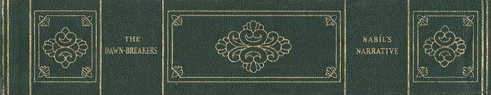

(Note: All entries in this index are included in the Covenant Library Unified Index)
INDEX
[CLUI: The Dawn-Breakers]
'Abá Basír (son of Haji Muhammad-Husayn, who repulsed the 'Iráqí regiment at Zanján),
Nabíl gives acknowledgment in his account of upheaval of Zanján, 580
'Abbás Mírzá. see Mírzá Buzurg
'Abbas-Qulí Khán, instigates martyrdom of Vahid at Nayríz, 494
'Abbas-Qulí-Khán-i-Láríjání, 339, 341, 375, 386, 391
'Abdu'l-'Alí Hájí Shaykh (Vahíd's father-in-law, distinguished among the notables of Nayríz), 476, 498
'Abdu'l-'Ali-Khán-i-Marághiyí (Captain of Prince Hamzih's artillery and a loyal friend to Mullá Husayn at Mashhad), 290, 324
'Abdu'l-Karím-i-Qazvíní, Mullá, (of Qazvín) also named Mírzá Ahmad by Bahá'u'lláh), 159, 162, 163, 168, 170, 176, 212, 227, 439
'Abdu'l-'Azim-i-Khu'í, Siyyid (surnamed Siyyid-i-Khál-Dár) (one of the survivors of Tabarsí), 362, 471
'Abdu'l-Báqí, Siyyid, was noted for his learning, (present when Báb dictated Tablet to Hájí Mírzá Janí at Káshán; afterwards became a believer), 219, 221
'Abdu'l-Hamíd-Khán (whose son was healed by the Báb), 195, 197, 372
'Abdu'l-Qasím-i-Aláqih-Band-i-Isfáhání, 587
'Abdu'l-Vahháb, Hájí, 7; story of, 87
'Abdu'l-Majíd, Hájí (Father of Badí, bearer of Bahá'u'lláh's Tablet to Násiri'd-Dín-Shah), 325, 580
'Abdu'lláh-Mullá, a native of Shíráz (recounts the murder of Mullá Taqí), 276
'Abdu'lláh Khán-i-Turkamán (Head of army ordered by the Shah to attack Tabarsí), 359, 360 (note 44)
Abu'l-'Aliy-i-Harátí (An enemy of Mullá Husayn), 159, 161
Abu'l-Hasan-i-Bazzáz, Hájí (A traveller with the Báb to Híjáz), 156
Abu'l-Hasan-i-Shírází, Hájí, 130
Abú-Tálib, Siyyid (The kad-khudá of a district in Nayríz and one of the companions of Vahíd), 407, 408, 481
Abu'l Qasím, Mírzá (Son-in-law and trusted disciple of the mujtahid, Mírzá Muhammad Taqí), investigates the message of Bahá'u'lláh, 114, 116
Abú-Turáb, Shaykh (a native of Ishtihárd, one of the disciples of Siyyid Kazím) (see note 22 p. 39), 293, 299, 347
Abú-Tálib Khan, Mírzá (brother-in-law of Mírzá Hasan, Bahá'u'lláh's half-brother), 639
'Ábid Hájí, Siyyid (one of the attendants who accompanied Vahíd to the enemy's camp and to his martyrdom), 490
Ahmad-i-Ahsá'í, Shaykh, 1 (notes 1, 2, 3), 1-18, 140, 201
Ahmad-i-Azghandí, Mírzá (a learned 'Ulama of Khurásán), 125, 127, 184, 504, 587
'Akká (reference to the most great Prison), Turkish penal colony, now in the State of Israel, 304
Alláh-Yár, Hájí (who with Sulayman Khán transfers the Báb's remains to Tihrán), 519
'Ali Khán, Siyyid, arrest at Zanján, 557
'Alí-Hájí, Mírzá, Siyyid (surnamed Khál-i-A'zam), the Báb's maternal uncle, also one of The Seven Martyrs of Tihrán, 143, 151, 175, 442, 446
'Alí, Mírzá, Mulla, Shaykh (surnamed 'Azim), nephew of the Imám Jum'ih of the Masjid-i-Vakíl, 125, 155, 172, 306, 313, 505, 587, 599
'Ali-Askar, Hájí (visits Báb in Tabríz when imprisoned), 239, 240
relates account of Martyrdom of the Báb, 518
'Ali-Mardán Khán (Fort of), (Hujjat, transferred to), 545, (note 25)
'Alí Khán-i- Máh-Kú'í (warden of the Castle of Máh-Kú), 230, 243, 247, 256, 302
'Alíy-i-Bastámí, Mullá (one of the Letters of the Living)
arrival with companions in Shíráz, 66, 87; suffering of, 89
'Alíy-i-Mudhahhib, Mullá (one of the attendants who bore Vahíd to his martyrdom), 490
'Alíy-i-Zunúzí, Siyyid (a notable of Tabríz, Muhammad- Alíy-i-Zunúzí's stepfather), 307, 509
Amír-Nizám-Taqí Khán, Mírzá (Grand Vazír of Násiri'd-Dín Sháh), 332, 500, 504, 506, 526, 539, 547, 595
Amír-Tuman. see Muhammad Khán
Áqá Khán-i-Núrí, Mírzá (the I'timádu'd-Dawlih who succeeded Mírzá Taqí Khán), 120, 279, 502, 522, 598, 650
Áqásí, Hájí, Mírzá (Grand Vazír of Muhammad Sháh), 120, 121, 204, 226, 231, 244, 254, 259, 280, 301, 525, 531
Áqá Ján, Mírzá (Bahá'u'lláh's Amanuensis), 460
Áqá Ján Khán-i-Khamsih (known also by the name of Khamsih and Násirí), colonel of the body guard, executioner of the Báb), 514
Áqáy-i-Kalím (Bahá'u'lláh's brother), 183, 255, 286, 288, 397, 432, 441, 582
Áqáy-i-Rikáb-Sáz, Mírzá (one of those present in the Masjid-i-Vakíl and heard the Báb, he afterwards suffered martyrdom), 156
Asadu'lláh, Hájí (a noted merchant of Qazvín), one of the first to be martyred in Qazvín, 281
Asadu'lláh, Mírzá (surnamed Dayyán by the Báb), 303, 304
Áyatu'l-Kursí (verse of the Qur'án, commentary on, by Siyyid Kázim), 10
'Azím. see 'Alí, Mírzá, Shaykh
'Aziz (uncle of Bahá'u'lláh), 113
'Aziz Khan-i-Mukrí (surnamed Sardár-i-Kull), his meeting with Hujjat, 556
Báb ('Alí Muhammad, Mírzá, of Shíráz), 27, 30, 52
early days of, 72
His birth, 72
school days, 75
marriage, 76
stay in Búshihr, 77
farewell address to Letters of Living, 92
reference to His mother and wife, 191
His arrest and outbreak of the plague, 196
release of, 197
farewell to His relatives and departure from Shíráz, 198
His letter to Manúchihr Khán, 199
honours accorded by the people to, 202
His commentary on Súrih of Va'l-'Asr, 201, 202, 203
death warrant of Báb issued by 'ulamas of Isfáhán, 209, 211, 212
His prediction of the approaching death of Manúchihr Khán, 213
His three days at the home of Hájí Mírzá Jání in Káshán, 219
His joy at the gift and message from Bahá'u'lláh, 227
Muhammad Shah, letter from, 229
last stage of His journey to Tabríz, 235
His farewell to His guards, 236
welcomed by a youthful disciple on arriving at Tabríz, 237, 238
incarceration in the castle of Máh-Kú, 243
incident in the life of, at Máh-Kú, 252
dream of, prior to declaration of His mission, 253
His words to Mullá Husayn, 258
His farewell to Mullá Husayn, 260
His epistle to the believers, 269
incarceration at the castle of Chihríq, 302, 303
His examination at Tabríz, 315
indignities inflicted upon Him, 319
return to Chihríq and His epistle to Hájí Mírzá Áqásí, 323
effects of the Mázindarán disaster on Him, 430
disposal of His documents, 504
arrival at Tabríz, 506
His confinement in the barracks, 507
His warning to the Farrásh-Báshí, 508
issue of His death warrant, 510
Sám Khán's request, 512
miraculous escape, 513
renewed and final attempt on His life, 514
transference of His remains to Tihrán, 519
effects of His martyrdom, 523
Badasht (Hamlet of), conference of, 288, 293
significance of gathering, 293, 297
departure of Bahá'u'lláh from, 298
Baghdad, 271, 650
Bahá'í Martyrs
execution of first in Persia, 280
massacre of Qazvín, 282
list of martyrs at Mázindarán, 414
execution of the seven martyrs of Tihrán, 446
burial of the seven martyrs, 463
names of martyrs at Nayríz (Fort of Khajíh), 487
martyrs of Zanján, 580
Bahá'u'lláh (Mírzá Husayn 'Alí of Núr), 12, 32, 103, 118, 120, 269, 284, 286, 292, 297
incident in Níyálá as related by, 299
His visit to Fort of Shaykh Tabarsí, 348, 368
reference to His activities prior to the declaration of mission, 372, 433, 459
His journey to Karbilá, incidents related by, 582, 586, 591, 593, 596
His meeting with 'Azim, 599
His imprisonment in Síyáh-Chál, 607
incident in the Síyáh-Chál, related by, 631, 635
His possessions plundered in Mázindarán, 637
release and banishment to Baghdad, 650
Bahíyyih Khánum, "The Greatest Holy Leaf," see Dedication page
Bálí-Sarí, explanation of the term, 84
Bárfurúsh, 183, 261, 336, 339, 408
Báqir, Mullá (the imám of the Chinár-Súkhtih), 476
Báqir-i-Tabrízí, Mullá (one of the Letters of the Living), 368, 505
Basír-i-Hindí, Siyyid (converted to the faith by Shaykh Sa'id-i-Hindí in India), 588 (note 6)
Bayán, Persian, reference to journey of Báb to Mecca and Medina in, 130
Búshihr, 51, 142, 671
Buzurg-i-Núrí, Mírzá (Mírzá 'Abbás, Father of Bahá'u'lláh; one of the wisest administrators among the Vazírs of the King), 11, 109, 234
Chihríq, Castle of, Báb's transference to, 259, 301
attitude of people toward the Báb, 302, 303
believers dismissed from, 306
Báb's return to, 323
Farrásh-Báshí, the Báb's warning to, 509, 513
Fírúz, Mírzá, Prince (the Nusratu'd-Dawlih, of Nayríz), 482
Fath-'Alí Shah, 5
Genealogy of Báb, lviii
Genealogy of Muhammad, liv
Ghulám-Ridá-i-Yazdí (accompanied Vahíd to Nayríz; one of the martyrs of Khazíh), 474, 486
Ghulam-Ridáy-i-Kúchik (accompanies Vahíd to Nayríz), 474
Gurgin Khán (successor to Manúchihr Khán), 213
his communication to Muhammad Sháh, 214, 215
Hádí (Hujjat's infant son, killed at Zanján), 572
Hádí, Mírzá (brother of Prince Mírzá Muhammad 'Alí), 159, 161, 461
Hasan, 'Aka, Siyyid, of Yazd (brother of Siyyid Husayn-i-Yazdí), 227, 245, 257
Hasan-i-Zúnúzí, Shaykh, 25, 30, 212, 245, 307, 593
Hujjat-i-Zanjání (Muhammad-'Alíy-i-Zanján, Mullá)
conversion of, 178
activities prior to conversion, 529
acceptance of message of Báb, 531, 534
incarceration in Tihrán, 537, 539, 540
his petition to Násirid-Dín Sháh, 554
death of his wife and child, 572
his death and his interment, 573
indignities inflicted on his body and fate of his kinsmen, 578
Husayn-i-Bushrú'í, Mullá (Bábu'l-Báb, First Letter of the Living), 47, 48
interview with Báb in Shíráz, 52
dismissal of, 85
Báb's parting words to, 96, 97, 123
his letter to the Báb, 126
his departure for Khurásán, 170
departure for Mashhad and pilgrimage to Máh-Kú, 254
visit to Tihrán, 255
arrival at Máh-Kú, 256
words of Báb to, 258
farewell of Báb to, 260
his arrival at Mashhad, 267
attack by the people of Bárfurúsh, 329
repulse by, 330, 338, 363, 378
last moments of, 379
death of, 381
reference to his burial and achievements, 382, 386
listed as second of martyrs of Fort Tabarsí, 415
Husayn-i-Mutavallí, Siyyid (betrays Quddús to enemy), 384, 398
Husayn-i-Turshízí, Siyyid (a native of Turshíz, a village in Khurásán), and one of the seven martyrs, 455
Husayn-i-Yazdí, Siyyid (the Báb's amanuensis in Máh-Kú and Chihríq and one of the Letters of the Living), 192, 193, 212, 219, 227, 243; account of his life and martyrdom, 257, 507, 508, 513; in Tihrán, 629
Husayn Khán-i-Írvání (Governor of the province of Fárs; surnamed Ájúdán Báshí and generally designated in those days as Sahib Ikhtíyár), 145, 146
Báb's meeting with, 151, 195, 196
Ibráhím, Mírzá (brother of Mírzá Muhammad-i-'Alíy-i-Nahrí), 208
Imám-Jum'ih, 201, 202
Isfahán
visit of Mullá Husayn to, 97
Báb's sojourn in, 199. see reference, 671
Ismá'íl-i-Qumí, Hájí, Mullá (a native of Faráhán and one of the seven martyrs), 453
Jáníy-i-Káshání, Hájí, Mírzá (surnamed Parpá), 217, 219, 368, 436
Ja'far-Qulí Khán-i-Námdár, 254, 279, 391, 394
Javád-i-Karbilá'í, Hájí, Siyyid (was called the Siyyid-i-Núr), 188 (notes 18 and 19)
Javád-i-Kirmaní, Hájí, Siyyid, 180, 593
Kangávar (arrival of the believers and their meeting with Mullá Husayn), 159
Karbilá, 2, 17, 32, 268, 582
Karbilá'í 'Abdul-Bagí (death of his five sons), 561
Káshán, 8, 101, 217, 223
Kázim-i-Rashtí, Siyyid, 10
mission of, 19
his allusion to the promised one, 24
visit to the Báb, 26
Báb attends his class, 27
his death, 45
Khusraw-i-Qádí-Kalá'í (a notorious scoundrel), 339, 342
Khurásán ("Land of Khá"), 10, first believers of, 125, 254, 267, 268, 286, 296, see reference, 671
Kinár-Gird (Fortress of), 225
Kirmánsháh, 13, 272, 587. see reference, 671
Kulayn (Village of), 226
Letters of the Living, see Tablets to, in front of Book
names of, 80, 82
Báb's farewell address to, 92
instruction of Báb to, 123
Máh-Kú (Castle of)
Báb's incarceration, 30, 183, 243, 244, 250
incidents in the life of the Báb at, 252, 256
Mahmúd-i-Qamsarí, Mírzá, 8
Manúchihr Khán, the Mu'tamidu'd-Dawlih, 199, 203, 205, 211, 213, 214
Mashhad, 12, 267, 288, 324. see reference, 671
Mázindarán
upheaval of, 299, 324, 362, 378, 387, 394, 396
general massacre, 404
list of martyrs, 414. see reference, 671
Mecca, 132, 138
Medina, 18, 140
Mihdí-Qulí, Mírzá, Prince, 332, 363, 368, 389, 393, 399, 583
"Most Great Branch" (Title given to 'Abdu'l-Bahá, 'Abbás Effendi who was Bahá'u'lláh's eldest son and whom He left as the interpreter of His Cause), 209, 440
incident related by, 616
Muhammad, Mullá (son of Mullá Taqí and husband of Táhirih), 113, 116, 117, 273, 275
Muhammad-'Alí, Mírzá (brother of Búyúk-Áqá and a distinguished Siyyid of Khuy), 303
Muhammad-'Alí, Mírzá of Tabríz (who suffered martyrdom with the Báb), 509, 510, 512, 513
Muhammad-'Alíy-i-Nahrí, Mírzá, Prince (whose daughter, Muniríh Khánum, was married to the "Most Great Branch" ('Abdu'l-Bahá), 159, 161, 208, 461
Muhammad-'Alíy-i-Qazvíní, Mírzá (one of the Letters of the Living), 273, 290
Muhammad-'Alíy-i-Zanján, Mullá (The Báb named him Hujjat-i-Zanjání). see Hujjat-i-Zanjání
Muhammad-Báqir-i-Rashtí, Hájí, Siyyid (known as Hárátí), 19, 97, 264
Muhammad Báqir (nephew of Mullá Husayn and one of the Letters of the Living), 287
Muhammad-Big-i-Cháparchí, 215, 226, 442, 536
Muhammad-Hasan-i-Qazvíní (given the name of Fatá'l-Qazvíní), 287
takes message from Táhirih to Quddús, 294
Muhammad-Husayn-i-Marághi'í (one of the seven martyrs), 458
Muhammad-Khán (the Amír-Túmán), 556
Muhammad-i-Furúghí, Mírzá, Mullá, 125, 332, 334, 353, 404, 580
Muhammad-i-Gulpáyigání, Siyyid (pen name was Ta'ir, whom Táhirih styled as Fatá'l-Malíh), 273
Muhammad-i-Mámáqání, Mullá (noted and learned disciple of Shaykh Ahmad-i-Ahsá'í), 11, 314, 509
Muhammad-Mihdí (surnamed Safihu'l-'Ulama), 205
Muhammad-Mihdíy-i-Kandí, Mullá (bearer of message from Bahá'u'lláh to the Báb), 227, 440
Muhammad-Mustafá (an Arab native of Baghdad), 271, 273
Muhammad-i-Núrí, Mullá (surnamed Mu'allim of Núr), his meeting with Mullá Husayn, his message to Bahá'u'lláh, 104
Muhammad-Ridá, Siyyid (the Báb's father), 14
Muhammad-Ridáy-i-Manshádí, Mullá (one of the enlightened 'ulamas of Manshad), Bahá'u'lláh gave him the name of Rada'r-Rúh, 473
Muhammad-Taqí, Mírzá (the leading mujtahid in Sárí, Mázindarán), 300, 346, 351, 357, 407
Muhammad-Taqíy-i-Harátí, Mullá, 202, 208
Muhammad-Taqíy-i-Milání, 239
Muhammad-Taqíy-i-Núrí, Mírzá (a celebrated mujtahid of Núr), his meeting with Bahá'u'lláh, 111
two dreams of, 111, 112
Muhammad-Taqíy-i-Kirmání, Hájí, (one of the seven martyrs), 456
Muhammad Sháh, 121, 171, 177, 215, 229, 253, 525, 531, 537, 539
Muhit-i-Kirmání, Mírzá (the declaration of the Báb to), 134, 136, 137, 138
Murtadá, Siyyid (a noted merchant of Zanján, and one of the seven martyrs), 457
Mustafa Big-i-Sanandají (a dervish; surnamed Majdhúb, one of the first to recognize the station of Bahá'u'lláh), 118
Nabíl-i-A'zam, Muhammad-i-Zarandí, 169, 434, 580, 586, 592
Najaf, 2, 7, 50
Násiri'd-Dín Sháh (the Vali-'Ahd, see Glossary), 314 (note 4), 358, 365, 400, 500, 539
Hujjat's petition to, 554
attempt on life, 599
Navváb Hamzih Mírzá (Governor of Ádhirbáyján), 504
Navváb-i-Radaví (the most prominent of Vahid's adversaries), 467, 471
Nayríz (upheaval of), 465, 474, 479, 642
Naw-Rúz (feast of), 191, 219, 256, 466
Níyálá (incident related by Bahá'u'lláh), 299, 301, 324
Níyáz-i-Baghdádí, Hájí (incident related by), 138
Núr (in province of Mázindarán), 112; effects of Bahá'u'lláh's visit to, 118
Qahru'lláh (name given by the Báb to the dervish from India, at Iskí-Shahr), 305, 306
Qazvín, 260, 269, 273; massacre of, 282
Quddús (Báb bestowed upon him the name of Ismu'llahu'l-Ákhar: literally "The Last Name of God"; The last Letter of the Living)
arrival in Shíráz, 69
visits Báb's maternal uncle in Shíráz, 143
meeting with Sadiq-i-Khurásání, 145
visits Kirmán, Tihrán, and Mázindarán, 179, 180, 182, 183
visit from Mullá Husayn in Bárfurúsh, 261
instruction to Mullá Husayn, 265
departure for Mázindarán, 290
meeting with Bahá'u'lláh in Sháh-Rúd, 292
incarceration of, 351
arrival of Quddús at Fort of Shaykh Tabarsí, 352, 355
injury sustained by, 367
assists at last moments of Mullá Husayn, 381
martyrdom of, 410
Qum, 101, 223
Qurban-Alí, Mírzá (a native of Bárfurúsh, one of the seven martyrs), 449 (note 35)
Sádiq-i-Khurásání, Mullá (formerly known as Muqaddas and surnamed by Bahá'u'lláh, Ismu'lláhu'l-Asdaq), conversion of, 100, 145, 184
Sadru'd-Dawlíy-i-Isfáhání (grandson of Hájí Muhammad-Husayn Khán-i-Isfáhání and a general in the imperial army), 547
Sa'idu'l-'Ulamá (the chief divine of Bárfurúsh), 265, 266, 358
Salih, Hájí-Mullá (Táhirih's father), 273
Sám Khán (Colonel of the Christian regiment of Urúmiyya), 510, 512, 514, 516
Sayyáh (Mírzá 'Alíy-i-Sayyáh-i-Marághihí), 431 (note 4), 432, 433
Sháh-Rúd (village of), 292, 299
Shíráz, 4, 30
Báb's stay in, 143
reference to those who embraced the faith in, 156. see reference, 671
Síyáh-Chál (literally black pit)
reference to, 372, 377
Bahá'u'lláh's imprisonment in, 607, 631
Síyáh-Dihán (village of, near Qasvín), 235 (note 21)
Sulaymán Khán, Hájí, 610; martyrdom of, 617, 618
Sulaymán Khán-i-Afshar, 235, 391, 402
Sultan-i-Karbilá'í, Shaykh, 190, 270, 593
Súrih of Va'l-'Asr (Báb's commentary), 201, 202
Táhirih (also known as Qurrat-i-'Ayní, and Zarrín-Táji)
reference to, 81
response to appeal of Báb, 269
activities in Karbilá, 270
activities in Baghdád, 271
stay in Kirmánsháh, 272
confinement in Qazvín, 273
her deliverance by Bahá'u'lláh, 284
removal to Tihrán, 284
her attitude to the Báb and Bahá'u'lláh, 285, 286, 287
Taqí, Mullá (uncle of Táhirih), 273, 276, 277, 278
Tihrán, 13, 101, 261, 287, 389, 433. see reference, 671
Umm-i-Ashraf, (one of the women who distinguished themselves by the tenacity of their faith in Zanján), heroism of, 562
Yahyáy-i-Darabí, Siyyid (surnamed Vahíd)
interview with Báb, 173, 177
journey to Tihrán and Yazd, 465
declaration of, to people of Yazd, 469, 472, 474
his departure for Nayríz, 474, 481, 483, 486, 489
martyrdom of, 494, 495 (note 28)
account of death, 495 (note 29)
Yazd, 5, 465, 642. see reference, 671
Yúsuf-i-Ardibílí, Mulla, 187, 367, 399
Zanján (upheaval of), 260, 527, 528, 532, 543
Zaynab (a village maiden), heroism of, 550
Zaynu'l-'Abidín Khán (governor of Nayríz), 476, 481, 490
